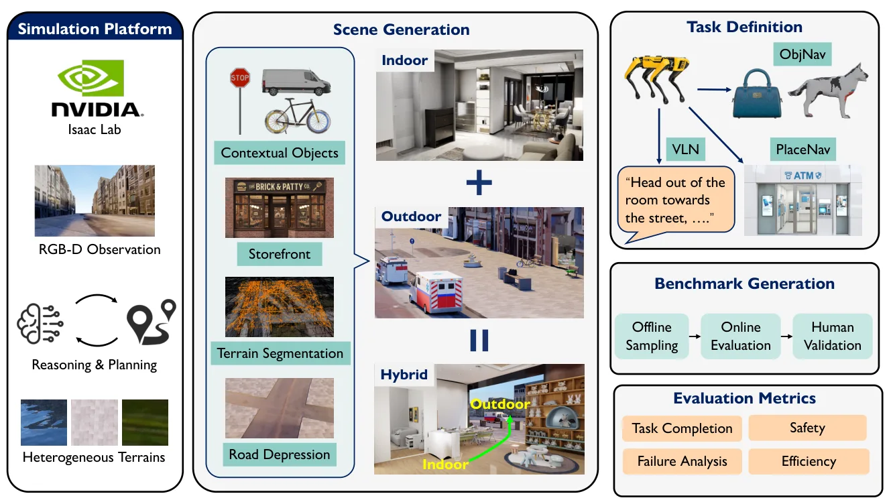
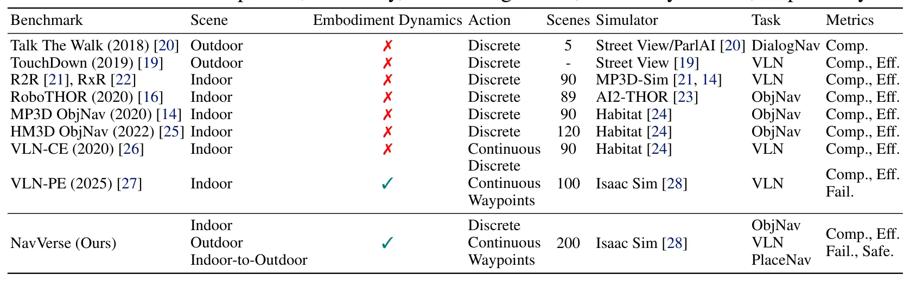
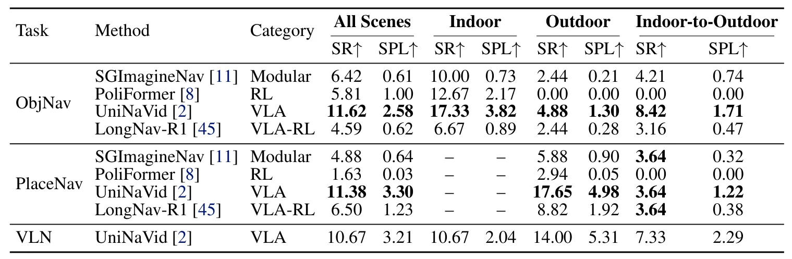
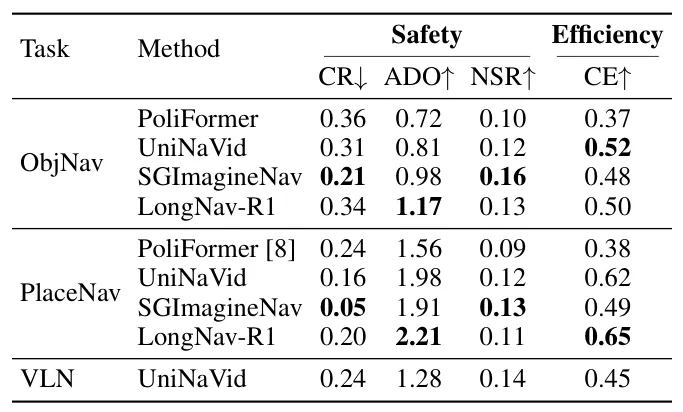
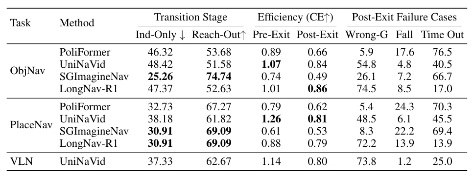
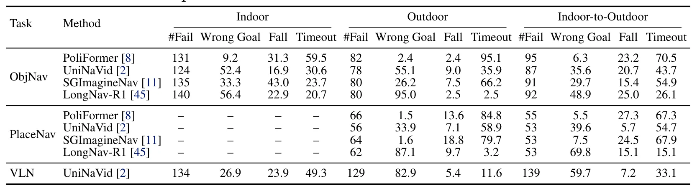
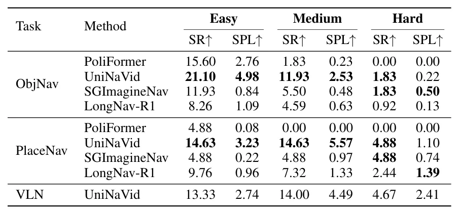

NavVerse：连续室内—室外具身导航基准NavVerse: Benchmarking Indoor-to-Outdoor Embodied Navigation in Continuous Robot Simulation
对室内外连续定位导航和 benchmark 设计有价值，资源规模清晰；摘要未说明 SLAM 接口、定位误差或真实传感器验证。
一句话工作总结
用连续 physics-enabled episodes 统一测试室内、出入口穿越和城市室外导航，暴露跨环境适应与执行失败。
摘要
NavVerse 是面向室内到室外连续具身导航的 physics-enabled benchmark，包含 100 个室内场景、50 个城市室外场景、50 个室内—室外场景及 10,000 个 episodes，覆盖 Object Navigation、Vision-and-Language Navigation 与 Place Navigation。Agent 通过可执行机器人接口接受任务成功率、路径效率和安全性评估。对 RL、VLA 与模块化 baseline 的零样本实验显示，端到端 VLA 成功率最高，模块化方法安全性最好，但现有 agent 在跨环境导航上仍远未解决。
Robots deployed in delivery, campus, and emergency-response settings often need to navigate from buildings to streets within a single continuous episode. Existing benchmarks usually evaluate indoor and outdoor navigation separately, and many abstract away robot execution, leaving exit finding, boundary traversal, adaptation, and kinodynamic failures underexplored. We introduce NavVerse, a physics-enabled benchmark for indoor-to-outdoor embodied navigation. NavVerse contains 100 indoor scenes, 50 urban outdoor scenes, and 50 indoor-to-outdoor scenes, and 10,000 episodes spanning Object Navigation, Vision-and-Language Navigation, and Place Navigation tasks, where agents search for semantic points of interest such as restaurants or banks. Agents are evaluated through executable robot interfaces using task-success, path-efficiency, and safety metrics. Zero-shot experiments with RL, VLA, and modular baselines show that current agents remain far from solving cross-context navigation: end-to-end VLAs obtain the highest zero-shot success, while the modular method provides the strongest safety profile. PlaceNav further reveals a clear drop from outdoor to indoor-to-outdoor scenes, indicating that adaptation remains major bottleneck.
中文解读摘录
- 作者：Junzhe Wu, Yue Hu, Zeyu Han, Po-Hsun Chang, Yinan Dong, Behrad Rabiei, Maani Ghaffari
- 价值判断：把建筑内部、出入口穿越与城市室外放进同一连续 physics-enabled episode，能暴露地图边界、环境切换和 kinodynamic execution 被分离 benchmark 掩盖的问题。
- 资源与结果：包含 100 个室内、50 个室外、50 个室内—室外场景及 10,000 episodes，覆盖 ObjectNav、VLN 和 PlaceNav；零样本结果显示 VLA 成功率最高，modular baseline 安全性最好，但跨环境仍远未解决。
- 后续核查：传感器与定位接口是否允许内部建图、ground-truth pose 使用边界、跨场景 domain shift，以及能否接入经典 SLAM/Nav2 baseline。
- 链接：arXiv · PDF
图表/页面预览

{kind=link}

{kind=link}

{kind=link}

{kind=link}

{kind=link}

{kind=link}

{kind=link}
